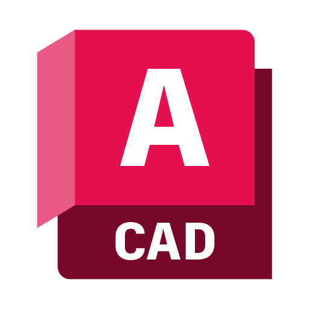

Tecnologías & Partners Estratégicos




Integramos IA Generativa, Agentic AI, ingeniería eléctrica normada (NOM-001) y automatización industrial para construir la espina dorsal tecnológica que impulsa la eficiencia operativa y la ventaja competitiva.
Rediseñamos procesos ineficientes antes de automatizar. La IA no es un añadido, es el núcleo.
Identificamos desperdicios (muda), sobrecargas (muri) e irregularidades (mura) utilizando metodología Lean. Simplificamos flujos de aprobación (de 5 a 2 firmas) mediante reglas de negocio automatizadas. Eliminamos silos de información con una capa de datos unificada (Data Fabric).
Downtime no planificado
Memorias de cálculo
La inteligencia artificial no es un “añadido” sino el núcleo del sistema. Cada módulo (desde la captura de datos hasta la toma de decisiones) está diseñado para ser asistido o ejecutado por modelos de IA entrenados en el contexto específico de la empresa, con capacidades de razonamiento y aprendizaje continuo.
Modelos adaptativos · MLOps nativo
No facturamos horas sin generar valor. Cada proyecto incluye KPIs contratados: reducción de tiempo de elaboración de 40h a 15 min, disminución de downtime no planificado en un 35%, etc.
Sistema construido en bloques independientes (Python, JavaScript/Next.js, C++) que permite validar funcionalidades tempranas y ajustar el rumbo sin afectar lo construido.
Todo el código fuente, diagramas de PLC y documentación se entregan en repositorios privados del cliente con licencia MIT, garantizando independencia y no dependencia.
| Tipo de automatización | Herramientas | Entregable típico |
|---|---|---|
| Flujos de documentos | n8n, Make, Zapier, Power Automate | PDF recibido por correo → extracción, clasificación, guardado en SharePoint + SQL |
| Cálculos de ingeniería | Python con Pandas, NumPy, SymPy | Memorias de cálculo eléctricas (200 páginas generadas en 5 min) |
| Integración PLC - Nube | MQTT, OPC UA, Node-RED, C++ SDKs | Datos de temperatura y vibración de motor enviados cada segundo a Azure |
| Reportes regulatorios | ReportLab, JasperReports, Crystal Reports | Generación automática de dictámenes de verificación eléctrica conforme a NOM-001 |
Beneficio cuantificable: En un proyecto de maquiladora automotriz, integramos 45 PLCs (Rockwell y Siemens) a un solo sistema de supervisión central, reduciendo el tiempo de respuesta ante fallas de 25 minutos a 3 minutos, y eliminando 15 horas semanales de captura manual.
| Componente | Tecnologías | Características críticas |
|---|---|---|
| Frontend Web | Next.js 14, React 18, Tailwind CSS | Accesibilidad WCAG 2.1, PWA, modo offline |
| Backend | Python (FastAPI, Django), Node.js | APIs <100 ms, documentación Swagger, rate limiting |
| Bases de datos | PostgreSQL (TimescaleDB), MongoDB, InfluxDB | Históricos de PLC por 10 años sin pérdida de resolución |
| Móvil | React Native, Flutter | Escaneo QR, geolocalización, sincronización offline |
Ciclo completo de automatización: levantamiento, diseño, selección de hardware, programación, simulación, pruebas SAT/FAT y documentación as-built.
Inventario I/O, diagramas P&ID, identificación de motores, sensores, condiciones ambientales.
Modos manual/automático, lógica de seguridad ISO 13849, interlocks, gestión de alarmas.
Cálculo de racks PLC, módulos I/O, fuentes, protecciones, gabinetes.
Entornos TIA Portal, Studio 5000, Codesys, TwinCAT, incluyendo PID, comunicación industrial.
PLCSim, FactoryTalk Logix Echo, pruebas de interlockings y condiciones límite.
Pruebas de carga, ajuste PID, planos CAD actualizados, manuales, respaldo de código.
Motor Python con PySpice + motor de reglas basado en los 680 artículos de la NOM-001 (incluye tablas de ampacidad, factores de corrección, puesta a tierra, protección contra sobrecorriente). Entrada wizard → salida en menos de 5 minutos con precisión del 99.5%.
vs 3-6 semanas tradicionales
Validado por peritos eléctricos independientes (50 proyectos benchmark).
Medidores inteligentes (Schneider PM8000, Siemens PAC4200) + dashboard React con alertas por factor de potencia, THD (hasta 31ª armónica). Muestreo configurable: 1/min → 10 muestras/seg.
Algoritmos Isolation Forest + Autoencoder LSTM detectan fallas en rodamientos, desbalanceo, degradación. Alertas con 72 horas de anticipación. Reducción del 45% en downtime. ROI promedio: 6 meses.
Modelo unifilar 3D (Unity/Three.js) con simulación what-if: apertura de interruptores, modificación de cargas, cálculo instantáneo de arco eléctrico y caída de tensión. Integración con PLC en tiempo real vía OPC UA.
Calificación
1 semana · NDA + cuestionario técnico
Diagnóstico Estratégico
2-3 semanas · VSM · Quick Wins
Diseño Arquitectónico
3-4 semanas · Arquitectura + PoC
Desarrollo e Integración
6-12 semanas · Sprints 2 semanas · CI/CD · SAT/FAT
Ramp-up + Evolución
Hipercuidado · SLA 99.5% · monitoreo proactivo
Transferencia tecnológica asegurada (No lock-in): Todo el código fuente, diagramas de PLC y documentación se entregan en repositorios privados del cliente (licencia MIT). Capacitamos a ingenieros del cliente para que mantengan y escalen el sistema sin dependencia.
Cumplimiento normativo y principios de IA responsable.
Anonimización, despliegue on-premise (Llama 3, DeepSeek), cifrado AES-256-GCM, VPN site-to-site con IPSec, Zero Trust.
La IA responde solo con base en su knowledge base corporativa. Auditoría de logs de inferencia almacenados por 7 años.
Decisiones críticas (energizar líneas, desactivar sistemas de seguridad) requieren autorización manual con doble factor. IA solo sugiere.
Auditorías semestrales con AIF360. Derecho a explicación (XAI) con SHAP values y cadena de razonamiento.
Cadenas de pensamiento, atribución de fuentes, registro inmutable en blockchain privado (Hyperledger Besu).
Preparación para regulaciones globales de IA, ISO 27001 en proceso, NOM-151 para firma electrónica.
Del software estático al ecosistema evolutivo.
Modelos IA con ventana de 1M tokens (Claude 4, Gemini 1.5 Ultra), generación automática de gemelos digitales desde diagramas unifilares (DWG a 3D).
Agentes multimodales que leen manuales PDF, diagramas CAD, P&ID y voz de operador. Integración con HoloLens 3 para asistencia remota.
Ejecución de LLM en PLC de última generación (Siemens S7-1500 AI module, Rockwell CompactLogix 5480). Estándar OPC UA sobre TSN.
Sistemas completamente autónomos “lights out” con supervisión humana remota. Garantía de rendimiento 99.99% con penalizaciones.
Casos de éxito con métricas reales.
Generador de Cálculos Regulatorios con IA. Software ejecutable que automatiza memorias de cálculo eléctrico NOM-001. Reducción del 82% del tiempo de elaboración (de 40h a 5 min).
ERP/CRM híbrido para gimnasios: ejecutable en recepción (control de acceso offline) + nube con IA predictiva de abandono. Incremento del 25% en retención de clientes.
Plataforma cloud con deep learning para monitoreo predictivo de diabetes. Integración con wearables, alertas tempranas al círculo de cuidado. Reduce ingresos de emergencia en un 34%.
Dos ingenieros con una visión: construir la infraestructura de IA más robusta.

CEO & Arquitecto de Soluciones IA
Ingeniero full‑stack con especialización en IA y sistemas embebidos. Lidera arquitectura nativa, agentes autónomos y ejecutables de alto rendimiento.

COO & Estratega de Operaciones
Experto en administración de proyectos tecnológicos y transformación digital. Gestiona la ejecución impecable y la alineación estratégica con los objetivos de negocio.
Descargue el portafolio completo con todas las capacidades de ingeniería eléctrica, IA nativa, casos de éxito y el detalle de nuestros pilares tecnológicos. Más de 16 páginas de contenido estratégico.
Nuestro equipo directivo atiende personalmente cada proyecto estratégico. Contáctenos para una sesión de diagnóstico sin compromiso.
Analizamos sus necesidades y le presentamos una hoja de ruta con IA nativa, ejecutables o arquitectura cloud.
Solicitar reunión ahoraRespuesta en menos de 24h · Confidencialidad garantizada